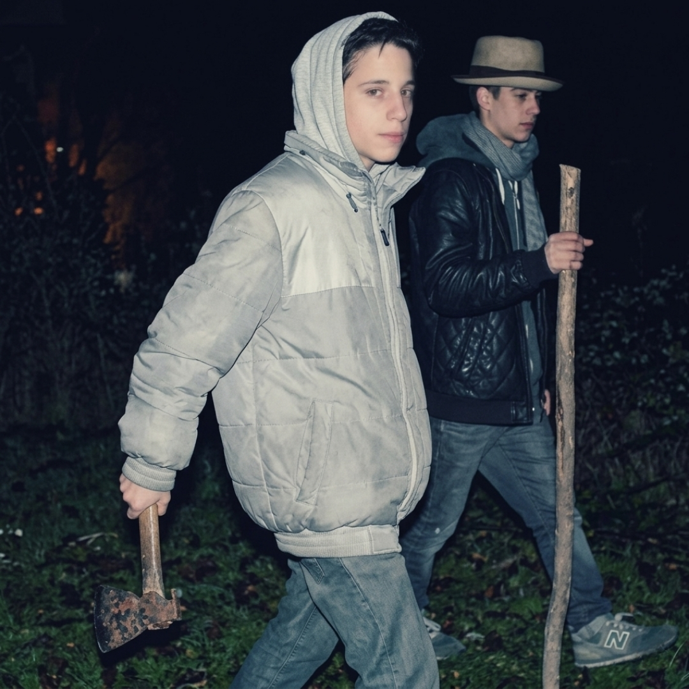

2014 - Buenos Aires, Argentina

“Primera ley de vida” es una de las grabaciones más tempranas conocidas del rapero argentino Wos, realizada junto al rapero Rizas dentro del circuito underground del hip-hop porteño. El tema se originó aproximadamente entre 2014 y 2015, en una etapa en la que Wos todavía no era una figura conocida de la música argentina y participaba activamente en el ambiente de plazas, cyphers y competencias de freestyle.
La canción surgió en el contexto del colectivo Desastres Squad (DS3), un grupo de jóvenes raperos vinculados a la escena emergente de Buenos Aires. Musicalmente, el tema responde al estilo boom bap clásico del rap underground de la época: una base simple, tempo medio y un enfoque centrado en la rima y la métrica. El verso recurrente “vivo por mis muertos y muero por mis vivos” resume la idea central de la canción, que plantea una ética de fidelidad hacia la gente cercana y la propia historia.
Dentro de la trayectoria de Wos, este registro es significativo porque documenta una etapa previa a su reconocimiento masivo, permitiendo observar el desarrollo inicial de su estilo y su vínculo inquebrantable con la cultura del freestyle.
Material difundido con fines culturales y de preservación histórica.